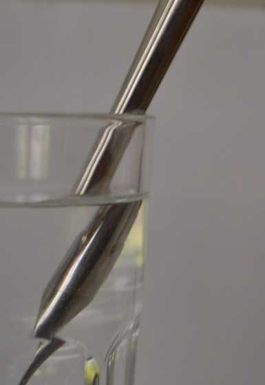
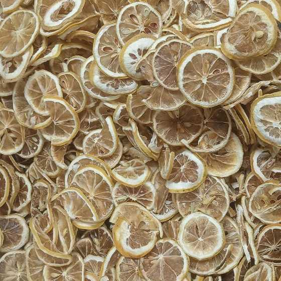
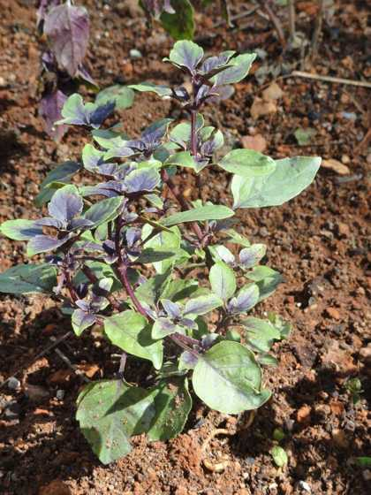
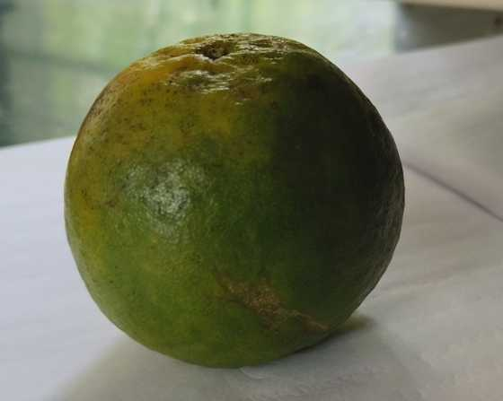
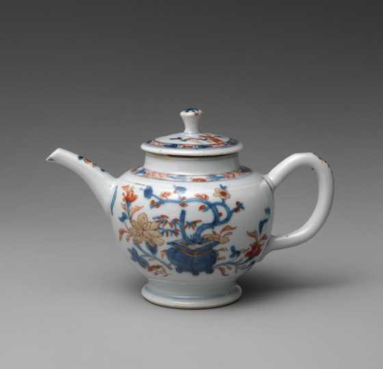

スパークリング
炭酸で割る、スパイスの香りのコーラ。
写真はフリー素材のイメージで、お店の実際の様子ではありません。他の地域で撮影されたものや撮影地が分からないものを含みます。これは試作サイトで、お店の公式サイトではありません。
以下は公開されている取材・紹介記事で確認できた内容です(出典は制作メモに記録)。
三沢市幸町にある、クラフトコーラを主役にしたカフェです。2024年10月21日に開店しました。
店名「波羅蜜」の由来は公開情報で確認できませんでした。ここでは意味を断定せず、制作側のイメージとして「めぐる・ひとめぐりの一杯」という言葉をコンセプトに使っています。

以下は紹介記事で見られた内容です。現在の提供内容・価格・営業時間は準備中です。最新情報はInstagramでご確認ください。

炭酸で割る、スパイスの香りのコーラ。

ルイボスティーと合わせた、炭酸なしのやさしい一杯。

ミルクと合わせた、甘くまろやかな一杯。
営業時間・定休日・価格: 準備中(お問い合わせはInstagramから)。電話: 準備中。








上の写真はスパイス・ハーブ・お茶のイメージで、実際の材料や提供品ではありません。
以下は制作側が作成したイメージ例で、実在のお客様の声ではありません。
スパイスの香りがふわっと広がって、飲み終えたあともほんのり余韻が残りました。
ご来店のお客様(イメージ)
靴を脱いでゆっくり座れるので、のんびり過ごせました。ノンカフェインなのもうれしいです。
ご来店のお客様(イメージ)
コーラといってもいろいろな飲み方があって、お茶やミルクで割ったものも気になりました。
ご来店のお客様(イメージ)
写真はすべてフリー素材(Wikimedia Commons掲載・CC0)で、お店の写真ではありません。使用の際に縮小しています。